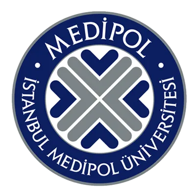

Eğitim
BİLGİSAYAR MÜHENDİSLİĞİ
1 dönem sonunda psikoloji bölümüne yatay geçiş yaptım.
PSİKOLOJİ
2015 2020 arası Psikoloji okudum.
Mezun olduktan ve 2 yıl saha deneyiminden sonra tekrar köklerime yani kodlamaya döndüm.

1 dönem sonunda psikoloji bölümüne yatay geçiş yaptım.
2015 2020 arası Psikoloji okudum.
Mezun olduktan ve 2 yıl saha deneyiminden sonra tekrar köklerime yani kodlamaya döndüm.
1997 de İstanbulda doğdum. Hobilerim plastik model maketçilik, bilim kurgu edebiyatı,
video oyunlar, Warhammer 40k evreni and çizim/dijital çizim.

Şuanda Neos yazılımdan yazılım uzmanlığı üzerine
Frontend ve Backend eğitimi almaktayım.